Developer · arquitectura, backend Laravel y app KMP
Alex Brayan Gutiérrez Huanca
Product Owner · prioriza con MoSCoW
Jhon Saul Mamani Cruz
Scrum Master · eventos, métricas y QA
Jhon Fredy Quilla Larico
Developer · panel, tienda, E2E y despliegue
Eventos realizados
Evento
Sprint 1
Sprint 2
Sprint Planning (4 h)
03/09
01/10
Daily Scrum (15 min)
20
20
Refinamiento (1 h/sem.)
4
4
Sprint Review (2 h)
30/09
28/10
Retrospectiva (1.5 h)
30/09
28/10
DoR: historia con Gherkin, INVEST, puntos y MoSCoW. DoD: escenarios cumplidos, pruebas en verde, modo avión y aceptación del PO.
ProLech · Sustentación
4 · Product Backlog
139 puntos priorizados con MoSCoW
Planning Poker con escala Fibonacci. Todas las historias Must se entregaron; lo pendiente (11 pts) depende de contratar VPS, Nubefact o es Could.
HU
Historia
Pts
HU-07
Regla de 2 adulteraciones
8
Must
HU-08
Liquidación semanal
8
Must
HU-13
Acopio sin señal (SQLDelight)
8
Must
HU-14
Sync Ktor + Last-Write-Wins
8
Must
HU-17
Producción maestro–detalle
8
Must
HU-20
E-commerce con boleta
8
Must
HU-22
Planilla de choferes
5
Must
HU-23
Costo real por litro
5
Must
HU-21
Control sorpresa
5
Should
HU-27
Pestaña Inspecciones
3
Could
ProLech · Sustentación
5 · Historia de usuario con Gherkin e INVEST
HU-22 · Planilla de choferes
Como administrador, quiero que la planilla se calcule sola,
para pagar lo justo y conocer el costo de la logística.
Escenario: Cálculo de la planilla semanal
Dado jornal S/ 60, bono S/ 0.02/L y pensión 13 %
Y «Carlos Ramos» trabajó 6 días y recogió 898.7 L
Cuando genero la planilla del 22/10 al 28/10
Entonces su bruto es 6×60 + 898.7×0.02 = S/ 377.97Y su neto es 377.97 − 13 % = S/ 328.83Escenario: Confirmar el pago
Dado una planilla «Por pagar»
Cuando confirmo el pago por Yape
Entonces queda «Pagada» y descargo la boleta PDF
INVEST
Independiente
Solo usa acopios y GPS ya existentes
Negociable
Tarifas en Configuración, sin código
Valiosa
½ día de trabajo → 1 clic con boleta
Estimable
5 puntos (Planning Poker)
Small
Cabe en 10 h de desarrollo
Testeable
3 pruebas en PlanillaYCostoLecheTest
Cada escenario Gherkin tiene una prueba automatizada con el mismo nombre.
ProLech · Sustentación
6 · Arquitectura
App KMP offline-first + servidor Laravel MVC
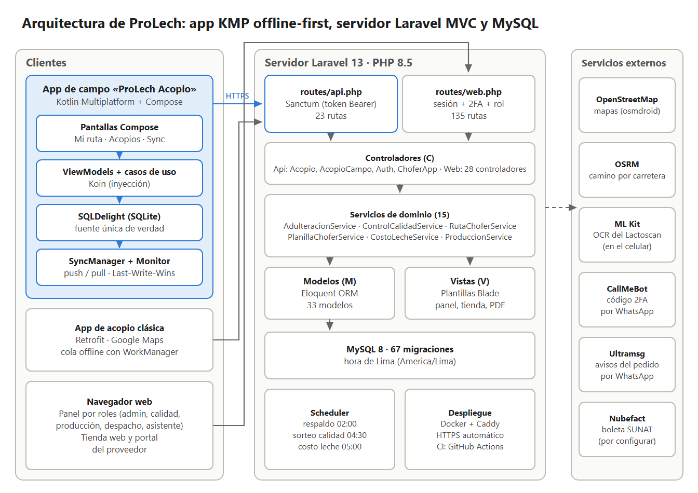
Kotlin Multiplatform + Compose: dominio, datos y UI compartidos.
SQLDelight 2: fuente única de verdad; migraciones 1.sqm → 4.sqm.
Ktor + Koin: API con token Bearer; SyncManager push/pull.
OSMDroid + OSRM: mapa sin Google y camino por carretera.
Laravel 13: 33 modelos, 15 servicios, Sanctum, 2FA y scheduler.
MySQL 8 + Docker/Caddy (HTTPS) listo para el VPS.
ProLech · Sustentación
6b · Arquitectura en capas
Círculos concéntricos: las dependencias apuntan al centro
App KMP: datos (SQLDelight, Ktor, OSMDroid) → presentación → casos de uso → dominio
ProLech · Sustentación
7 · Offline-first
El chofer nunca espera a la red
1 Guarda en SQLDelight con UUID nuevo y PENDIENTE_CREAR.
2MonitorConectividad detecta la red → SyncManager.
3Push por Ktor: POST/PUT/DELETE /api/acopios-campo.
4 Servidor: upsert por UUID, Last-Write-Wins, 2 strikes y frasco.
5Pull: aplica solo lo más reciente; 401 → login sin perder nada.
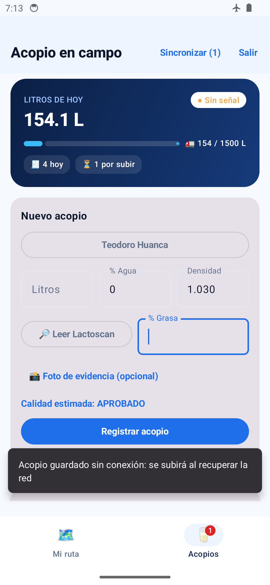
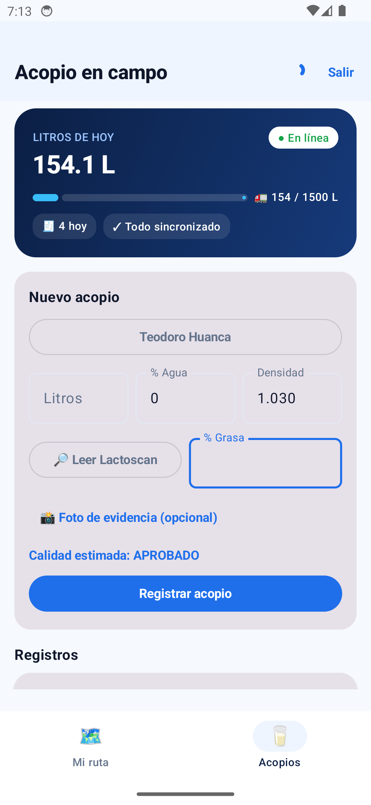
Modo avión → «Pendiente» · al volver la red → «Sincronizado» (emulador Android 14)
ProLech · Sustentación
7b · Secuencia y base local
Del modo avión al servidor, sin duplicados
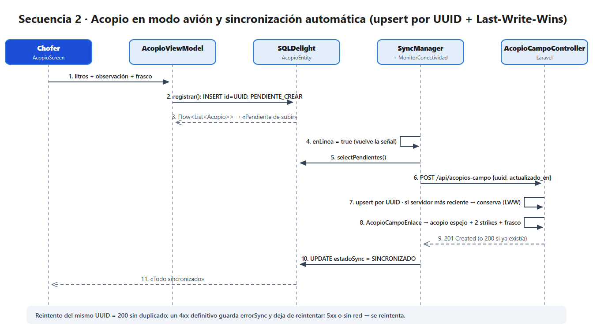
SyncManager → POST /api/acopios-campo: upsert por UUID y Last-Write-Wins
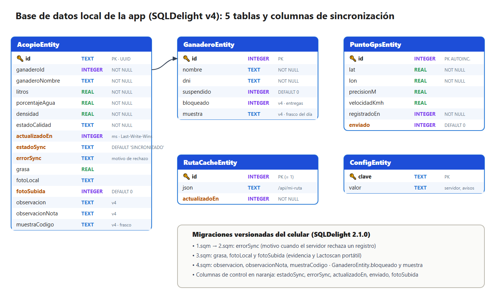
SQLDelight v4: 5 tablas; estadoSync, errorSync y actualizadoEn controlan la sincronización
ProLech · Sustentación
8 · Sprint 1 · 03/09 – 30/09
Core de acopio, calidad y liquidación
Sprint Goal: el chofer registra cada entrega con su calidad Lactoscan, la planta castiga la adulteración con la regla de 2 strikes, rota a sus choferes y liquida cada semana.
Por hacer 0
Todo el compromiso se trabajó.
Arrastre 3
HU-12 Portal del proveedor · 3
Hecho 60
HU-01 Login rol + 2FA · 5
HU-04 Rotación de choferes · 5
HU-05 Acopio Lactoscan · 8
HU-07 Regla 2 strikes · 8
HU-08 Liquidación · 8
+ HU-02, 03, 06, 09, 10, 11
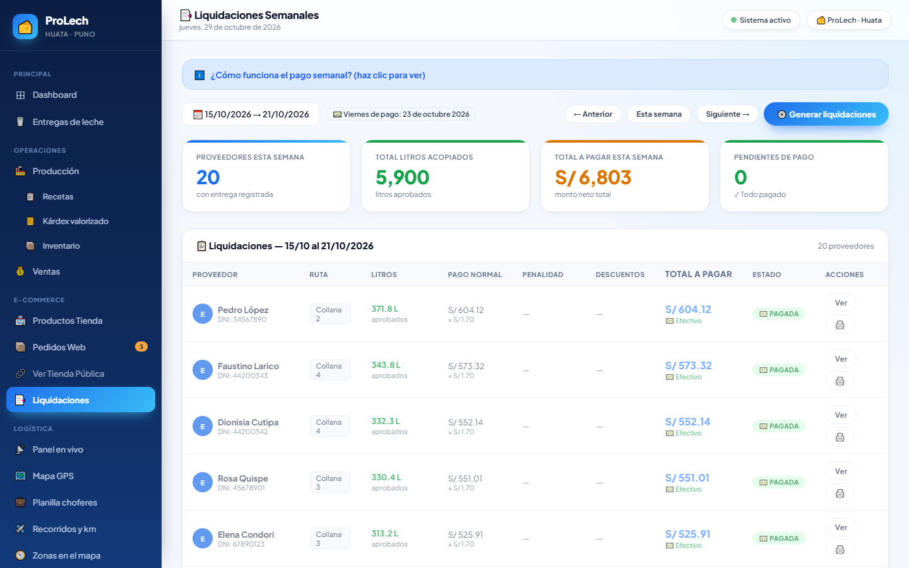
Incremento v0.5: liquidación semanal con sobre de pago PDF. 60 / 63 pts (95.2 %).
ProLech · Sustentación
9 · Sprint 2 · 01/10 – 28/10
App offline-first y negocio
Sprint Goal: el chofer trabaja sin señal con la app KMP y GPS; la planta paga la planilla, conoce el costo real de su litro, produce con recetas maestro–detalle y vende en línea.
Pendiente 11
HU-25 VPS + dominio · 5
HU-26 Nubefact SUNAT · 3
HU-27 Pestaña Inspecciones · 3
Arrastre del S1 3
HU-12 Portal del proveedor ✓
Hecho 68
HU-13 Acopio sin señal · 8
HU-14 Sync Ktor + LWW · 8
HU-15 Mapa OSMDroid + GPS · 5
HU-17 Producción maestro–detalle · 8
HU-20 E-commerce · 8
HU-21 Control sorpresa · 5
HU-22 Planilla de choferes · 5
HU-23 Costo real por litro · 5
+ HU-16, 18, 19, 24
68 / 79 pts · 86.1 %
ProLech · Sustentación
10 · Incremento: acopio en campo
«ProLech Acopio»: ruta, mapa y registro en el predio
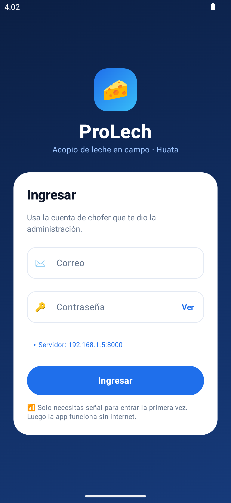
Servidor configurable
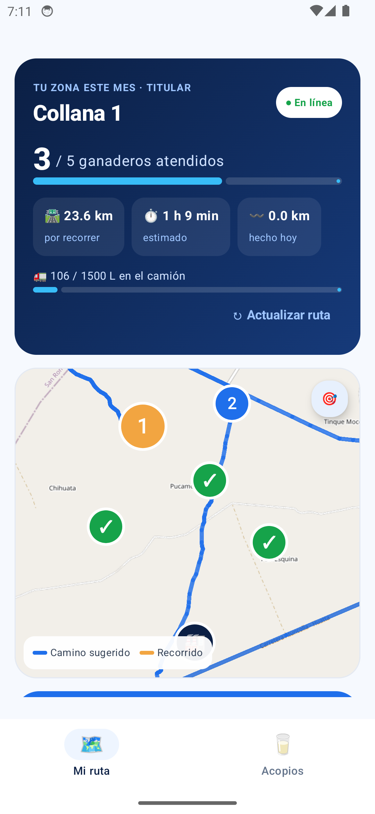
Mi ruta · OSMDroid + OSRMAcopio sin señalSincronizado
ProLech · Sustentación
11 · Incremento: costo real por litro
¿Cuánto cuesta de verdad un litro puesto en planta?
Costo_Real = Precio promedio pagado
+ (Combustible + Pago choferes) ÷ Litros
+ % Gastos generalesEjemplo de referencia
1.80 + 0.14 + 0.08 = S/ 2.02 / LDatos reales · 30 días · 11 931.8 L
1.16 + 0.45 + 0.06 = S/ 1.67 / L
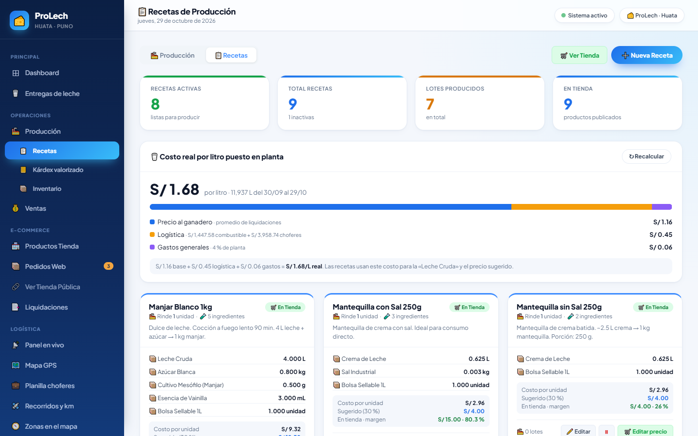
La «Leche Cruda» de cada receta usa este costo → costo unitario y precio sugerido se recalculan solos.
ProLech · Sustentación
12 · Incremento: planilla de choferes
Días, litros y km → boleta en un clic
Concepto
Carlos Ramos
Días con ruta × S/ 60
6 → S/ 360.00
Bono 898.7 L × S/ 0.02
S/ 17.97
Bruto
S/ 377.97
Pensión 13 %
− S/ 49.14
Neto a pagar
S/ 328.83
Km (GPS) · combustible planta
191.06 km · S/ 105.08
Semanal (jueves–miércoles) o mensual.
Adelantos, pago Efectivo/Yape/Transferencia.
Boleta PDF · Excel · PDF de la planilla.
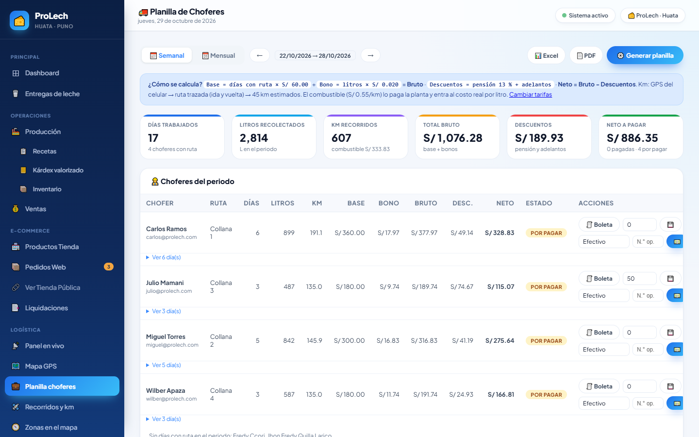
ProLech · Sustentación
12b · Incremento: kárdex valorizado
Leche cruda y productos al costo promedio ponderado
Entrada: saldo += cant × costo
Salida: costo = saldo_valor ÷ saldo_cant
Promedio = saldo_valor ÷ saldo_cant
Leche Cruda
entra: acopio del día (costo real/L)
sale: lotes de producción
Productos terminados
entra: lotes (costo ÷ unidades)
sale: ventas y tienda web
Paginación en español en todos los listados: «Mostrando 1 a 15 de N resultados».
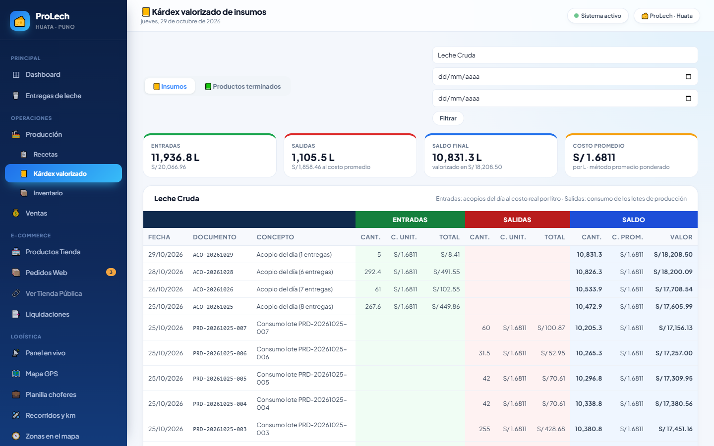
ProLech · Sustentación
13 · Incremento: producción y e-commerce
Orden maestro–detalle → lotes con vencimiento → tienda
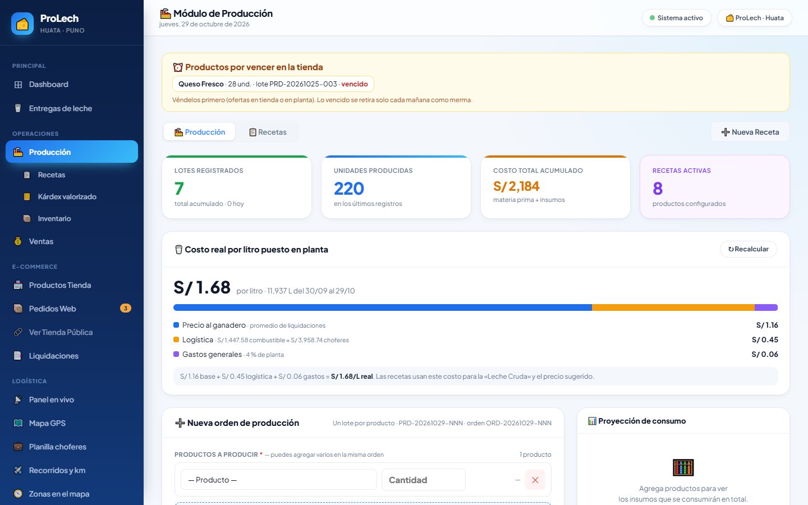
Orden de producción multiproducto (descuenta insumos, crea lotes ORD con vida útil)
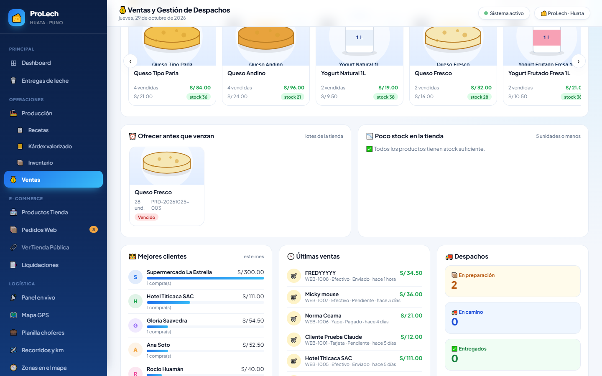
Más vendidos con el Manjar Blanco artesanal y productos por vencer
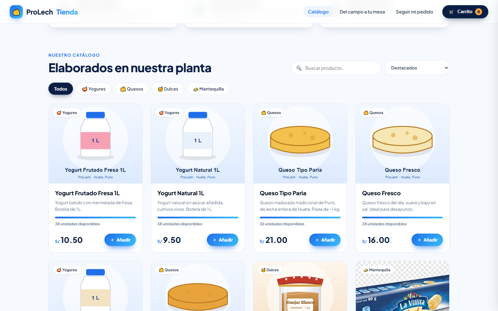
Tienda en línea: Yape, tarjeta o efectivo, boleta B001 y seguimiento
ProLech · Sustentación
14 · Incremento: control de calidad sorpresa
El chofer observa, la planta mide y sanciona
Sorteo diario 04:30
3 controles (predio o frasco) + 1 tanque por camión; el semáforo rojo/amarillo sube la probabilidad.
Grave (agua > 5 %)
Esa leche no se paga · bloqueo de 3 entregas → 6 si reincide → suspensión.
Leve
Descuento en la entrega y aviso al ganadero.
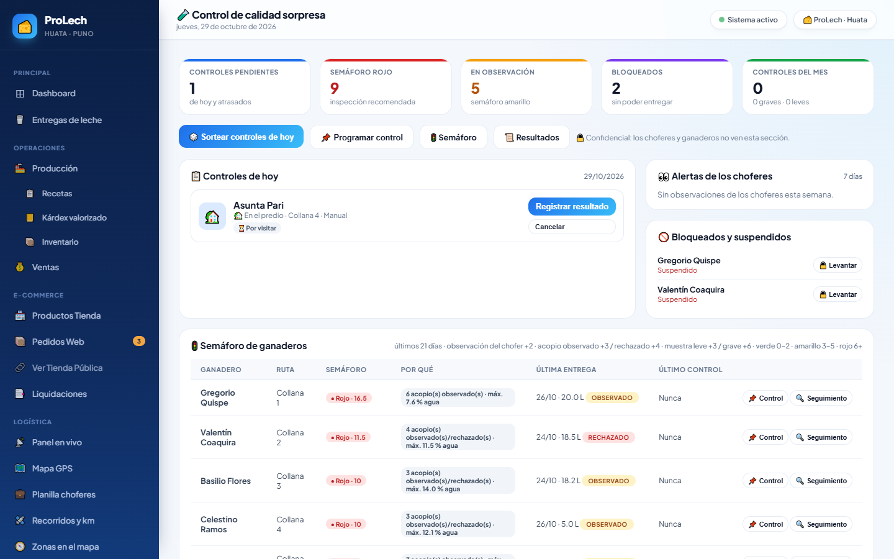
ProLech · Sustentación
15b · Gestión de la configuración
GitHub: monorepo con ramas por sprint
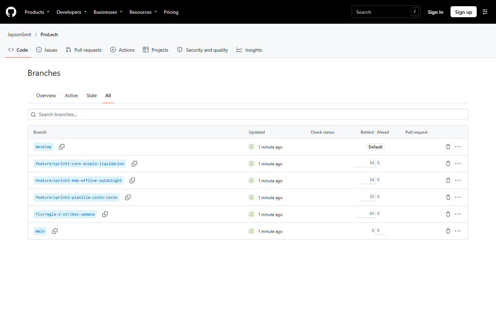
6 ramas: main, develop, 2 del Sprint 1 (incluida la corrección de 2 strikes) y 2 del Sprint 2
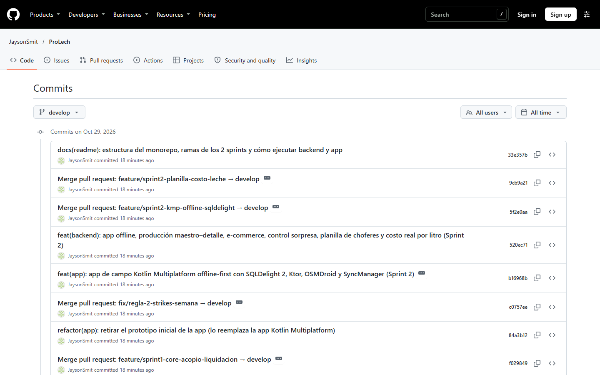
Historial de develop: fusiones «Merge pull request» y commits feat/fix/refactor/docs
github.com/JaysonSmit/ProLech · prolech-backend/ + aplicacionnnnnn/ · historial real importado con git subtree
ProLech · Sustentación
15 · Métricas reales de los 2 sprints
Velocidad, burndown y burnup
Indicador
Valor
Velocidad promedio
64 pts
Cumplimiento (128/142)
90.1 %
Avance del producto
92.1 %
Defectos / KLOC
46 / 56.6 = 0.81
ProLech · Sustentación
16 · Calidad del producto
338 verificaciones, 0 fallidas
183
pruebas PHPUnit · 841 aserciones
68
pruebas kotlin.test · reporte Gradle 100 %
82
peticiones y pasos E2E contra el servidor real
5
aceptación en emulador y Samsung Galaxy S25 Ultra
Caso
Escenario
Resultado
CP-11
Reenviar el mismo acopio (mismo UUID)
Sin duplicados
CP-15
2.º acopio observado en la semana
Fallaba el domingo · corregido
CP-41
Liquidar la semana que cierra el miércoles
SQLite excluía el día · corregido
CP-46
Costo real: 1 000 L, S/ 180 logística, 4 %
S/ 2.0592 / L
CP-48
Entrega de un ganadero bloqueado
App lo impide · API 403
ProLech · Sustentación
17 · Retrospectiva
Empezar · Dejar · Continuar
ProLech · Sustentación
18 · Conclusiones
Lo que logramos
El chofer registra sin señal y nada se duplica (UUID + Last-Write-Wins).
La regla de 2 strikes y el control sorpresa detectan la adulteración en el momento.
La liquidación de 20 ganaderos y la planilla de 5 choferes: de días a un clic.
El costo real por litro (S/ 1.67) llega a las recetas y al precio sugerido.
Scrum en 2 sprints: 128 de 139 puntos (92.1 %), velocidad 64.